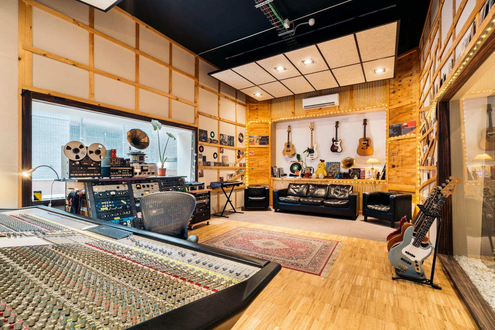

Acerca de Music Blog
La música nos conecta, inspira y acompaña.
Nuestra historia
Music Blog nace como un espacio dedicado a compartir nuestra pasión por la música, explorar diferentes géneros musicales y descubrir los sonidos que han marcado distintas generaciones.
Nuestra misión
Nuestro propósito es acercar la cultura musical a todas las personas, ofreciendo información interesante sobre géneros, artistas y tendencias musicales.
¿Quién está detrás del proyecto?
Este sitio web es desarrollado por Eduardo Godinez Santana como parte de un proyecto de formación en desarrollo web, aplicando conocimientos de HTML5, CSS3 y diseño responsivo.
